Ф10 · Фотограмметрия стрелки · F полноэкран · N заметки · ? справка
Фотограмметрия
Дрыга Данила Олегович
hopkuh@gmail.com
https://vk.com/dryga
+7(916)0306256
если есть инструкция,
значит от нее должна быть польза!
Кадровый снимок
центральная проекция снимаемого объекта на плоскость
(если на снимке отсутствуют смещения точек,
вызываемые дисторсией объектива съемочной камеры,
атмосферной рефракцией и другими причинами)
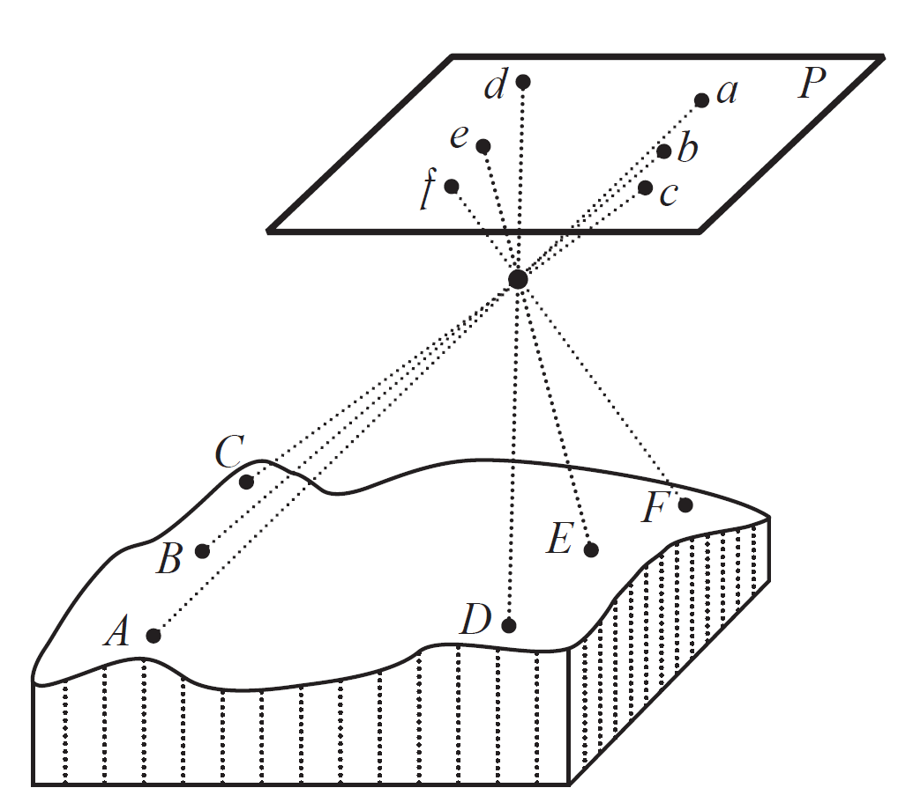
Кадровый снимок
центральная проекция снимаемого объекта на плоскость
(если на снимке отсутствуют смещения точек,
вызываемые дисторсией объектива съемочной камеры,
атмосферной рефракцией и другими причинами)
Связка проектирующих лучей - совокупность проектирующих лучей, при помощи которых
получен снимок
Центр проекции S - точка, в которой пересекаются проектирующие лучи (находится в передней узловой точке объектива)
негативное (обратное) и позитивное (прямое) изображения
- при анализе снимка можно рассматривать как негатив, так и позитив
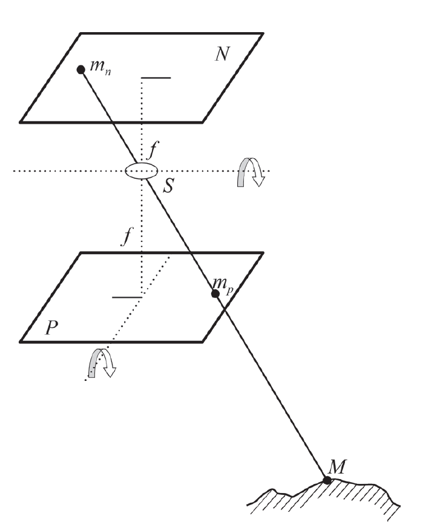
Элементы центральной проекции
P — плоскость снимка;
E — предметная (горизонтальная) плоскость;
S — центр проекции (точка фотографирования);
о — главная точка снимка — след пересечения плоскости снимка главным лучом
главный луч — это луч, проходящий через центр проекции S перпендикулярно к плоскости снимка);
Sо = f — фокусное расстояние съемочной камеры — расстояние от центра проекции S до главной точки снимка;
n — точка надира — пересечение отвесной линии, проходящей через центр проекции, с плоскостью снимка;
N — проекция точки надира снимка на плоскость Е;
SN = H — высота фотографирования (высота центра проекции относительно предметной плоскости);
α0 — угол наклона снимка
on = f tgα
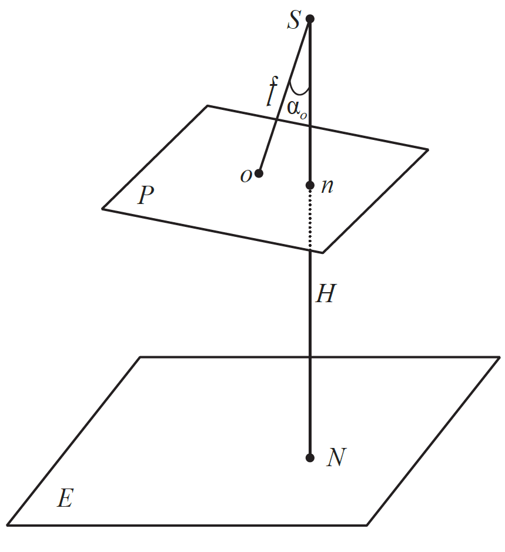
Элементы центральной проекции
Любая точка местности М на снимке изображается точкой m.
Прямая линия на местности (KL) изображается прямой (kl) на снимке.
…в частном случае, когда прямая линия на местности (DF) проходит через центр проекции S, она изображается на снимке в виде точки (df)
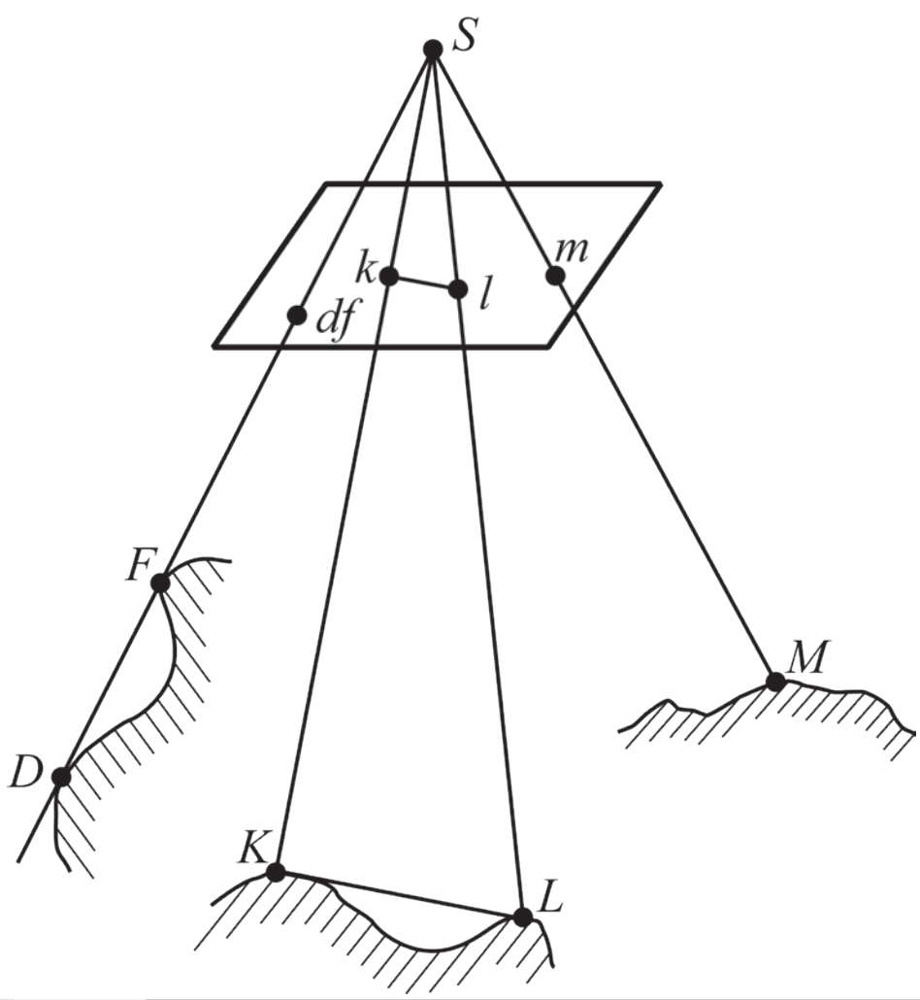
Элементы центральной проекции
Точка надира n является точкой схода изображений на снимке вертикальных линий объекта
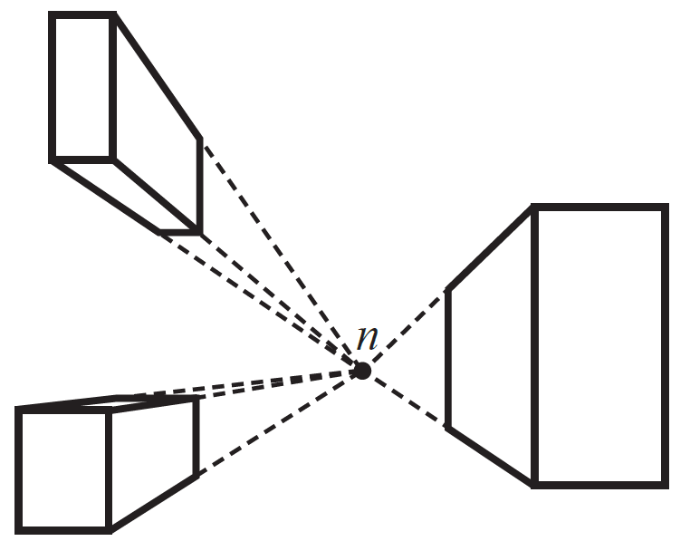
Элементы центральной проекции
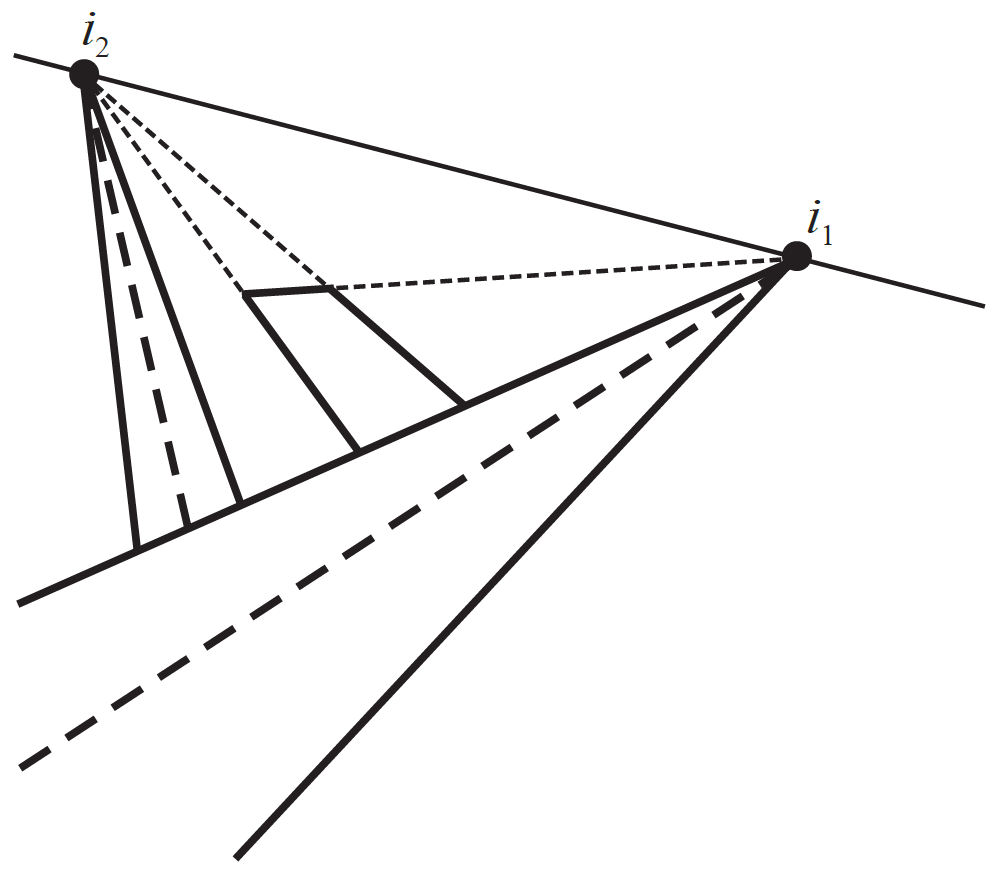
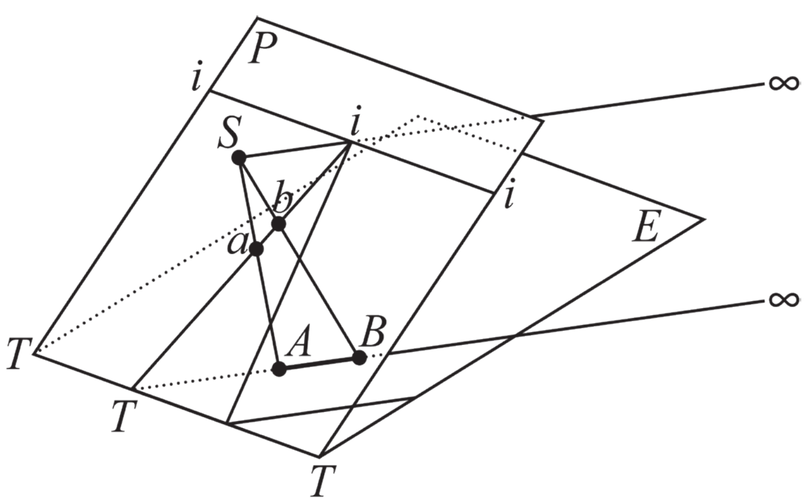
Системы координат снимка
Точка надира n является точкой схода изображений на снимке вертикальных линий объекта
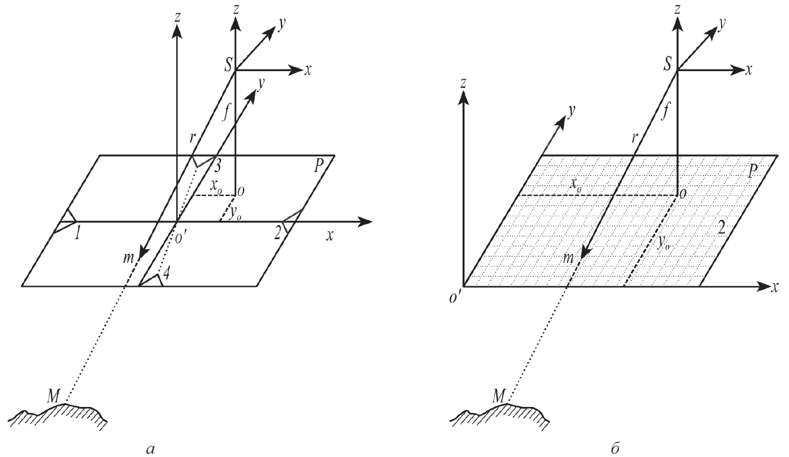
Элементы внешнего ориентирования снимка
Точка надира n является точкой схода изображений на снимке вертикальных линий объекта
Определение элементов внешнего ориентирования снимка по опорным точкам (обратная фотограмметрическая засечка)
Обратная фотограмметрическая засечка
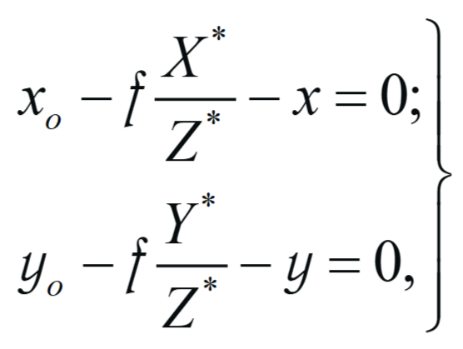
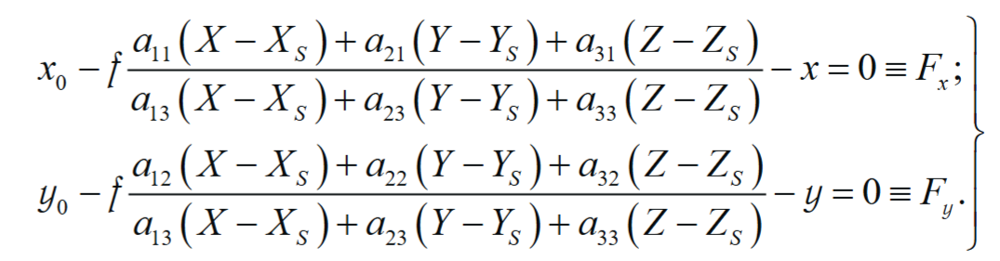
Основные случаи наземной фотограмметрической съемки
Нормальный случай съемки - оси x,y и z систем координат съемочных камер (снимков) приблизительно параллельны соответственно осям X, Z и Y базисной системы координат. При этом угловые элементы внешнего ориентирования снимков имеют следующие значения: α1≈α2≈0°; ω1≈ω2≈90°; κ1≈κ1≈0°.
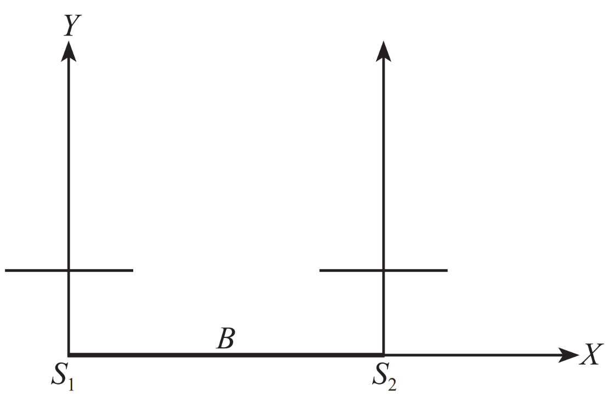
Основные случаи наземной фотограмметрической съемки
Равноотклоненный случай съемки - оси z (оптические оси) съемочных камер приблизительно параллельны между собой и отклонены от оси Y базисной системы координат на угол α. Угловые элементы внешнего ориентирования снимков в этом случае имеют следующие значения: α1 ≈ α2 ≈ α; ω1≈ω2≈90°; κ1≈κ1≈0°
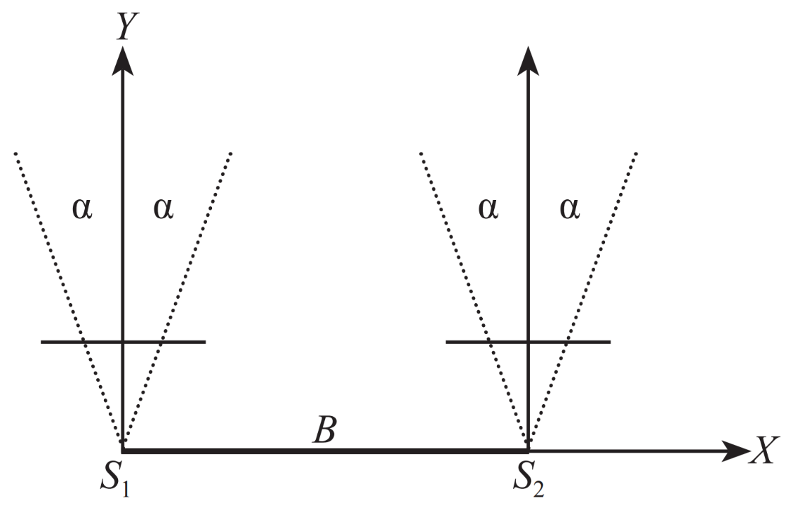
Основные случаи наземной фотограмметрической съемки
Равнонаклонный случай съемки - оси z (оптические оси) камер приблизительно параллельны между собой и наклонены относительно горизонтальной плоскости на некоторый угол ω. Угловые элементы внешнего ориентирования снимков в этом случае имеют следующие значения: α1≈α2≈0°; ω1≈ω2≈ω; κ1≈κ1≈0°
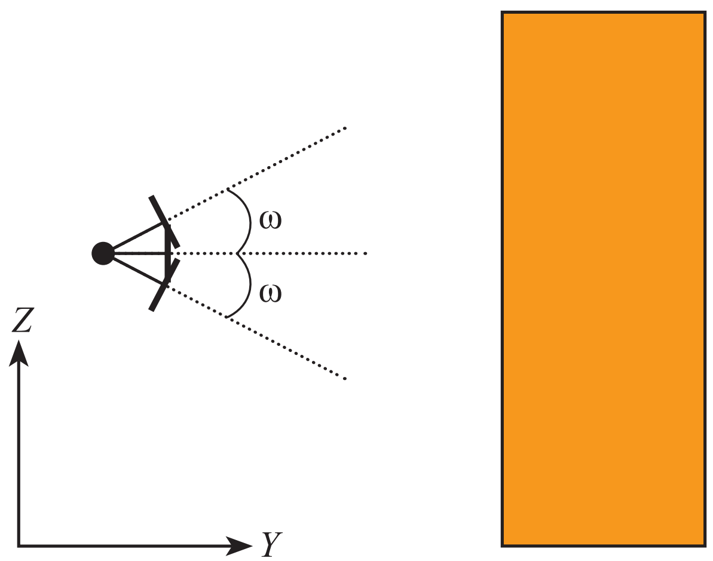
Основные случаи наземной фотограмметрической съемки
Конвергентный случай съемки - оптические оси съемочных камер повернуты друг к другу на углы α и пересекаются под углом γ— углом конвергентности
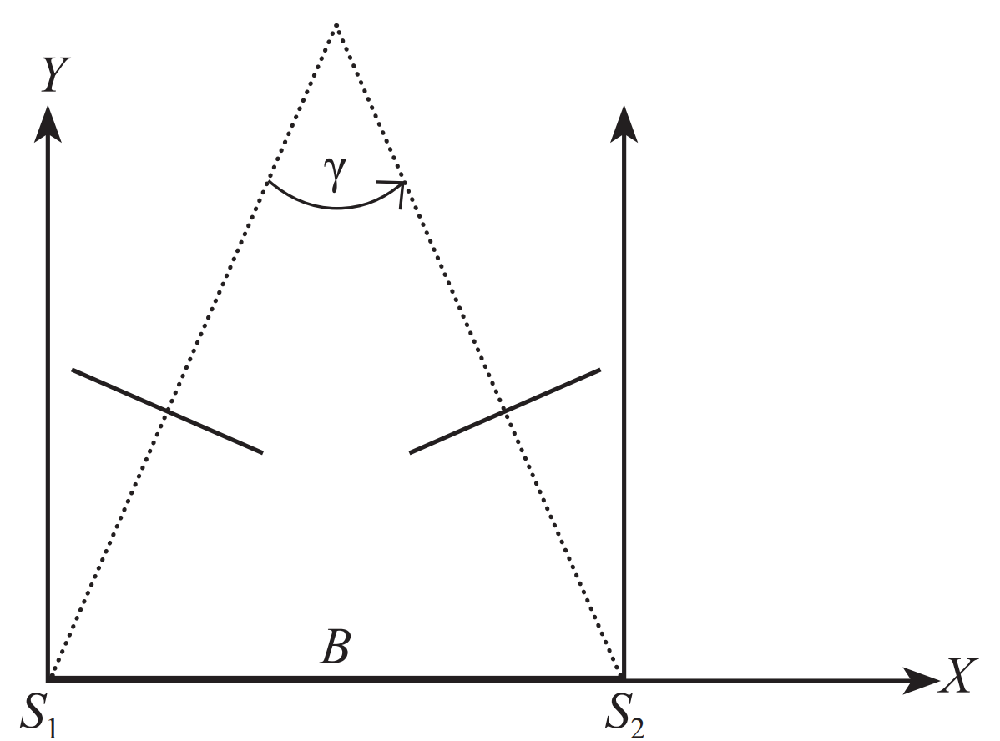
Основные случаи наземной фотограмметрической съемки
Общий случай съемки - оптическая ось камеры направляется примерно перпендикулярно к объекту или в середину объекта. В общем случае ориентация камеры может быть произвольной
Маршрутная и блочная съемки
Обработка раньше
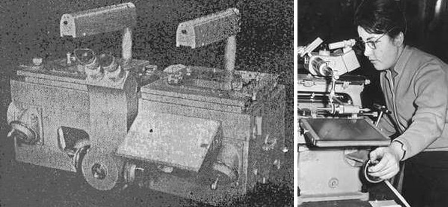
Обработка современность
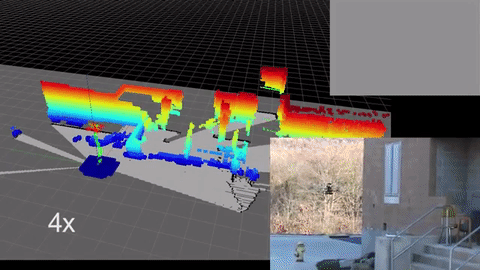
Autodesk Recap Photo (edu free)
RealityCapture
ContexCapture
Pix4D
Altizure (free?)
Photomodeller
Metashape
3DFZephyr (free?)
VisualSFM (free)
Meshroom (free)
Программное обеспечение
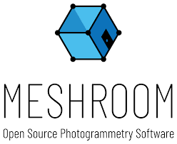
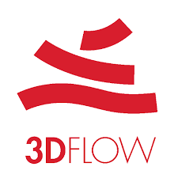
Intel i5 и выше (рекомендуется i7+ или Xeon)
16 GB ROM и выше (рекомендуется 64)
Видеокарты Nvidia с поддержкой CUDA (возможно использовать несколько)